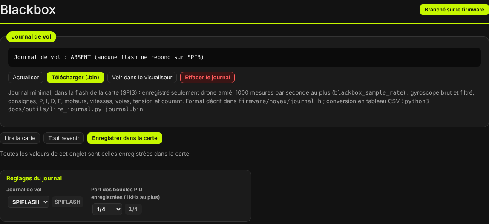
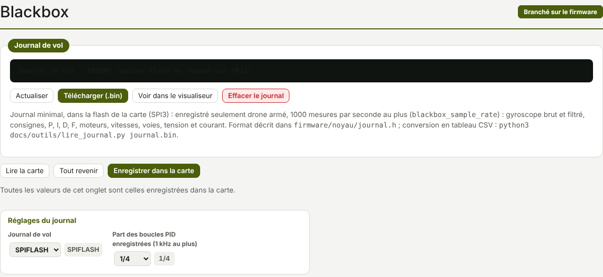

TRUEGLIDE
TRUEGLIDE Blackbox (journal de vol)
L'onglet Blackbox (groupe Analyse) gère le journal de vol enregistré dans la flash de la
carte : son état, son téléchargement en fichier .bin, son ouverture dans le visualiseur et son
effacement.


État du journal
Le cadre Journal de vol affiche la réponse de la commande journal ; Actualiser la
relit. Le journal peut être prêt, en cours d'effacement, plein, coupé (blackbox_device = NONE) ou
absent (aucune flash ne répond). La commande status donne aussi la place libre en secondes de vol.
Si la flash commence par un ancien journal d'un autre firmware (Betaflight), l'onglet le signale : il prend de la place et le journal d'XPro se remplit vite. Le télécharger d'abord pour le garder, puis effacer le journal.
Télécharger, voir, effacer
- Télécharger (.bin) : lit le journal par blocs de 4 Ko (pourcentage affiché) et l'enregistre sous
journal_xpro_<date>.bin. - Voir dans le visualiseur (0.8.4) : lit le journal de la carte et l'ouvre directement dans l'onglet Visualiseur Blackbox. Voir Visualiseur Blackbox : Min / Max pour régler l'échelle des courbes.
- Effacer le journal : après confirmation, efface tout le journal de la carte. Le télécharger d'abord.
Réglages
| Réglage | Choix | Défaut |
|---|---|---|
Journal de vol (blackbox_device) | NONE, SPIFLASH (flash de la carte, SPI3) | SPIFLASH |
Part des boucles PID enregistrées (blackbox_sample_rate) | 1/1, 1/2, 1/4, 1/8, 1/16 ; 1 000 mesures par seconde au plus | 1/4 |
Avec la boucle PID à 4 kHz (réglage par défaut), 1/4 donne 1 000 mesures par seconde. Les réglages se gardent avec Enregistrer dans la carte, comme dans les autres onglets.
Contenu du journal
Un journal minimal, au format propre à XPro (décrit dans firmware/noyau/journal.h). Chaque
armement commence un vol, avec un en-tête : fréquence des mesures et de la boucle PID, profils PID et de taux,
pôles des moteurs, props out, AIRMODE, version du firmware. Puis, à chaque mesure :
- temps, état (armé, ANGLE, HORIZON, AIRMODE, liaison perdue, mixeur saturé) ;
- gyroscope brut et filtré, consigne, P, I, D et F, sur les trois axes ;
- commande DShot et vitesse (tr/min) des 4 moteurs ;
- voies roulis, tangage, gaz, lacet ;
- tension et courant de la batterie.
Une vitesse, une tension ou un courant inconnus sont enregistrés comme inconnus, pas comme un chiffre. Sur KarRmen (essai B9, firmware 0.8.3) : 4 armements enregistrés, aucune mesure perdue à 1 000 mesures par seconde.
Conversion en CSV
Le fichier .bin se convertit en tableau CSV (une ligne par mesure) avec :
python3 docs/outils/lire_journal.py journal.bin [sortie.csv]
La colonne vol compte les vols ; une valeur inconnue reste vide. Un ancien journal d'un autre format
au début de la flash est sauté.